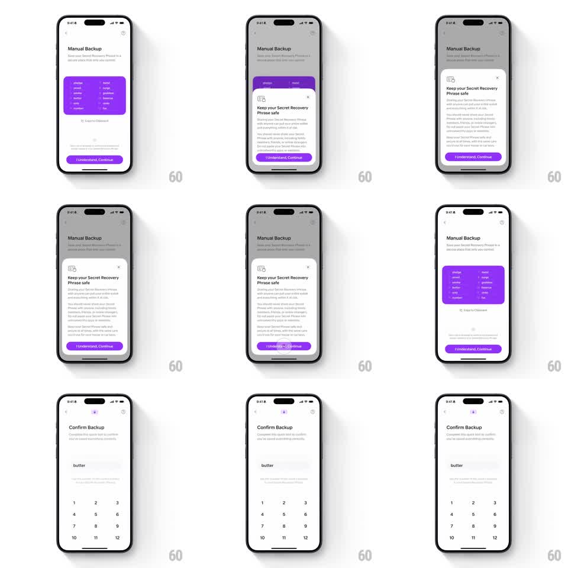

Media
Frame-by-frame

Rebuild this interaction 1:1: Family's manual backup transition - on the "Manual Backup" screen with the purple phrase card, the "Keep your Secret Recovery Phrase safe" sheet rises, and on continue the sheet scales down and morphs into a small header icon as the page pushes to "Confirm Backup" with its numbered word grid.

Rebuild this interaction 1:1: Family's manual backup transition - on the "Manual Backup" screen with the purple phrase card, the "Keep your Secret Recovery Phrase safe" sheet rises, and on continue the sheet scales down and morphs into a small header icon as the page pushes to "Confirm Backup" with its numbered word grid. ## Integration Integration: stack-agnostic spec - springs given as stiffness/damping, timed motions as duration + curve; map every value to your framework and animation library of choice. ## Scene Light "Manual Backup" screen: purple card with twelve recovery words, "Copy to Clipboard", purple "I Understand, Continue" button. The safety sheet: document icon, "Keep your Secret Recovery Phrase safe", warning paragraphs, same purple CTA. Destination: "Confirm Backup" - "Complete this quick test to confirm you've saved everything correctly", the word "butter" shown, a number grid (1-12) below, and a small header icon where the sheet's glyph landed. ## Motion spec Pattern: sheet-to-header-icon morph on page push. - The sheet slides up (spring ~300/20) over the dimmed backup screen (scrim 40%). - Tap "I Understand, Continue": the sheet's document icon detaches and shrinks (scale 1 -> 0.35) while flying to the top-center header position (arc path, 350ms ease-in-out); the sheet body collapses down and fades (250ms). - Simultaneously the "Confirm Backup" page slides in from the right (300ms ease-out), receiving the icon at its header. - The number grid staggers in (30ms per cell, scale 0.8 -> 1) and the target word fades up. ## Calibration - The icon's flight is the through-line - one element connecting the two pages. - The purple CTA keeps identical styling across sheet and page so the action feels continuous. ## Reduced motion The sheet fades out as the page pushes (250ms); no icon flight. ## Don't miss - The icon lands exactly in the nav header, becoming part of the page chrome. - The number grid (1-12) is the confirm mechanic - tapping a number fills the word slot.